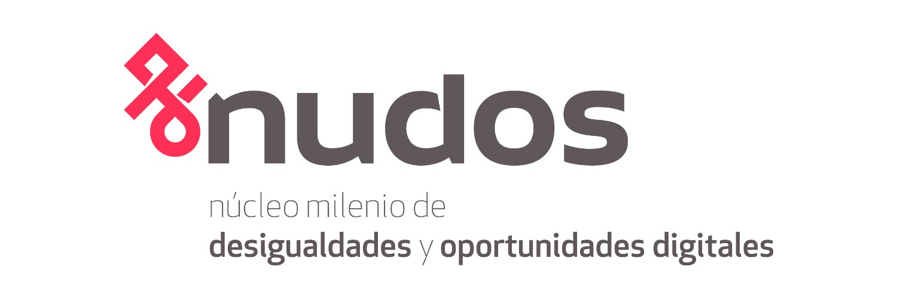
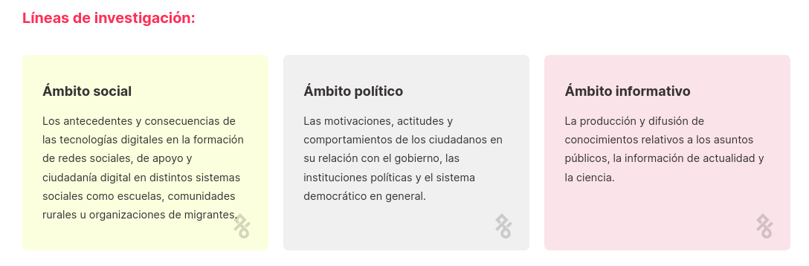

| Row | Missings | Mean | SD | Skew | Item Difficulty | Item Discrimination | α if deleted | |
| Buscar y encontrar información relevante en Internet | 22.68 % | 3.38 | 0.94 | -1.42 | 0.84 | 0.69 | 0.94 | |
| Evalúe la calidad de la información que ha encontrado en Internet | 23.37 % | 3.29 | 0.87 | -1.12 | 0.82 | 0.75 | 0.93 | |
| Compartir información práctica con un grupo de estudiantes | 23.46 % | 3.35 | 0.88 | -1.29 | 0.84 | 0.73 | 0.94 | |
| Colaborar con otros estudiantes en una tarea de grupo | 23.53 % | 3.37 | 0.86 | -1.31 | 0.84 | 0.72 | 0.94 | |
| Explicar a otros alumnos cómo compartir contenidos digitales en línea o en una plataforma escolar. | 24.00 % | 3.28 | 0.89 | -1.13 | 0.82 | 0.76 | 0.93 | |
| Escribir o editar un texto para un trabajo escolar | 24.09 % | 3.37 | 0.86 | -1.31 | 0.84 | 0.75 | 0.93 | |
| Recoger y registrar datos (por ejemplo, utilizando registradores de datos, [Microsoft® Access™], [Google® Forms], hojas de cálculo). | 24.42 % | 3.17 | 0.93 | -0.92 | 0.79 | 0.76 | 0.93 | |
| Crear una presentación multimedia (con sonido, imágenes o vídeo) | 24.56 % | 3.2 | 0.92 | -0.96 | 0.80 | 0.76 | 0.93 | |
| Crear, actualizar y mantener una página web o un blog | 25.07 % | 2.89 | 1.03 | -0.52 | 0.72 | 0.70 | 0.94 | |
| Cambiar la configuración de un dispositivo o una aplicación para proteger mis datos y mi privacidad. | 24.52 % | 3.25 | 0.92 | -1.05 | 0.81 | 0.75 | 0.93 | |
| Seleccionar el programa o app más eficaz que me permita realizar una tarea concreta | 24.81 % | 3.18 | 0.93 | -0.94 | 0.79 | 0.77 | 0.93 | |
| Crear un programa informático (por ejemplo, en [Scratch®], [Python®], [Java®]) | 25.80 % | 2.57 | 1.1 | -0.12 | 0.64 | 0.57 | 0.94 | |
| Identificar el origen de un error en un programa informático tras considerar una lista de posibles causas. | 25.88 % | 2.7 | 1.07 | -0.29 | 0.68 | 0.63 | 0.94 | |
| Desglosar un problema y representar una solución como una serie de pasos lógicos, como un algoritmo. | 26.53 % | 2.72 | 1.08 | -0.32 | 0.68 | 0.61 | 0.94 | |
| Mean inter-item-correlation=0.541 · Cronbach's α=0.940 | ||||||||

Diferencias de género en la autoeficacia digital en la escuela en 52 países
Juan Carlos Castillo, Daniel Miranda, Nicolas Tobar & Tomás Urzúa
Universidad de Chile & Millennium Nucleus of Inequalities and Digital Opportunities (nudos.cl)
VIII Seminario Internacional de Desigualdad y Movilidad Social en América Latina- Río de Janeiro 24, 25 y 26 de marzo
NUDOS


Punto de inicio
- Autoeficacia: “Juicios personales respecto a el grado de maestría o habilidad percibido para ejecutar acciones que requieran lidiar con situaciones prospectivas (hacer arreglos en las acciones para ajustarlas a la búsqueda de un objetivo)” (Bandura, 2006).
Las diferencias de género en el uso de las TIC’s se ha atenuado durante el tiempo (Hargittai & Shafer, 2006).
Las estudiantes mujeres tienden a presentar menores niveles de confianza pero mayores competencias que los hombres (Punter et al., 2017).
Autoeficacia Digital y Género
Hipótesis
H1. Existen dos dimensiones de autoeficacia digital, que se corresponden a un nivel básico y uno avanzado.
H2. Las mujeres tienden a presentar mayores niveles de autoeficacia digital general, en cambio los hombres presentan mayores niveles de autoeficacia específica.
H3. Las diferencias por género de autoeficacia digital varían entre los países del mundo.
Datos
- OCDE: Programa para la Evaluación internacional de estudiantes (PISA).
- 393607 estudiantes, 14038 escuelas y 52 paises.
- Marco de trabajo Tecnologías de la Información y Comunicación.
Mediciones de autoeficacia
¿En qué medida eres capaz de realizar las siguientes tareas cuando utilizas
Básica
- Buscar y encontrar información relevante en Internet.
- Evaluar la calidad de la información que has encontrado en Internet.
- Compartir información práctica con un grupo de estudiantes.
- Colaborar con otros estudiantes en una evaluación en grupo.
- Explicar a otros alumnos cómo compartir contenidos digitales en línea o en una plataforma escolar.
- Redactar o editar un texto para una tarea escolar.
- Recopilar y registrar datos (por ejemplo, utilizando registradores de datos,
, , hojas de cálculo).
- Crear una presentación multimedia (con sonido, imágenes y vídeo).
Avanzada
- Crear, actualizar y mantener una página web o un blog.
- Cambiar la configuración de un dispositivo o aplicación para proteger mis datos y privacidad.
- Seleccionar el programa o app más eficiente que me permita realizar una tarea concreta.
- Crear un programa informático (por ejemplo en
, , ). - Identificar el origen de un error en un afeter de software considerando una lista de causas potenciales.
- Desglosar un problema y representar una solución como una serie de pasos lógicos, como un algoritmo.
Respuestas: No puedo hacerlo (1), Me cuesta hacerlo solo (2), Puedo hacerlo con un poco de esfuerzo (3), Puedo hacerlo fácilmente (4).
Resultados
Descriptivos
Análisis factorial general
Análisis factorial por país
Bandura, A. (2006). Toward a Psychology of Human Agency. Perspectives on Psychological Science, 1(2), 164–180. https://doi.org/10.1111/j.1745-6916.2006.00011.x
Hargittai, E., & Shafer, S. (2006). Differences in Actual and Perceived Online Skills: The Role of Gender. Social Science Quarterly, 87(2), 432–448. https://doi.org/10.1111/j.1540-6237.2006.00389.x
Punter, R. A., Meelissen, M. R., & Glas, C. A. (2017). Gender differences in computer and information literacy: An exploration of the performances of girls and boys in ICILS 2013. European Educational Research Journal, 16(6), 762–780. https://doi.org/10.1177/1474904116672468